Los servicios de repositorio git permiten hacer la gestión del desarrollo
No son tan potentes como una herramienta dedicada (Pivotal Tracker, por ejemplo), pero se enlazan con el código y permiten tener un solo repositorio para todo
GitHub tiene ahora mismo dos tipos: un kanban simple (el "antiguo") y una versión más moderna y potente, que permite mezclar varios repositorios (¡que también tiene kanban!)
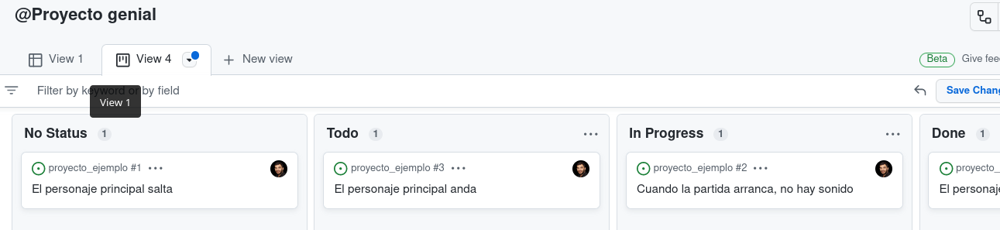
Figura 1: Una versión visual de las issues, como una tablero
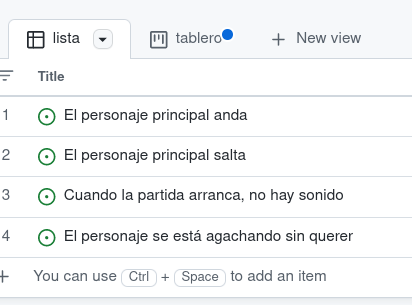
Figura 2: O como una lista (con filtros y demás)
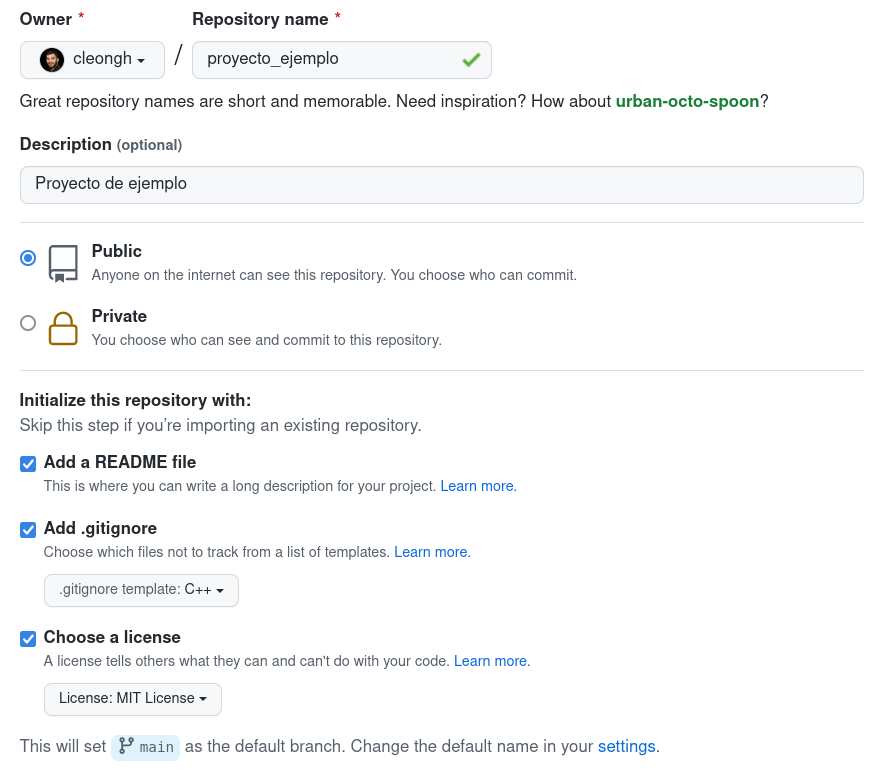
Figura 3: Un repositorio tiene que tener una licencia
Los proyectos y los repositorios son independientes, aunque se enlazan fácilmente
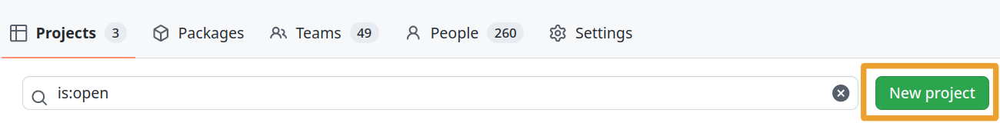
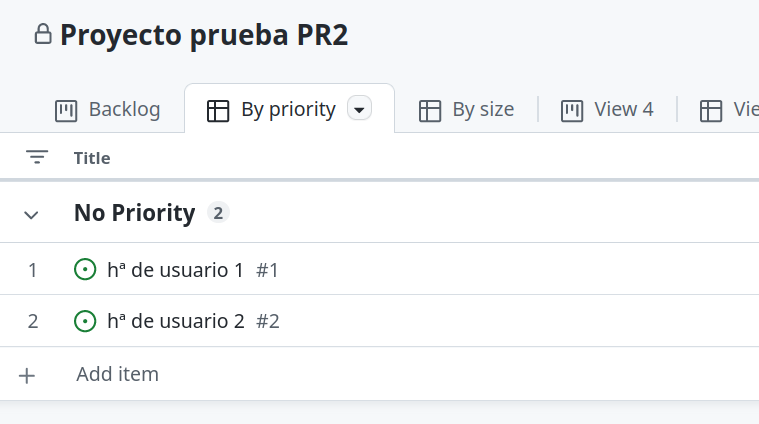
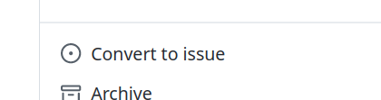
Figura 4: Dentro de la historia de usuario, convertimos es issue, nos pedirá un repositorio
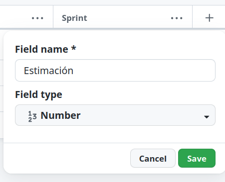
Hay que convertir el elemento del proyecto en issue (y asignarle repo) para activar las etiquetas
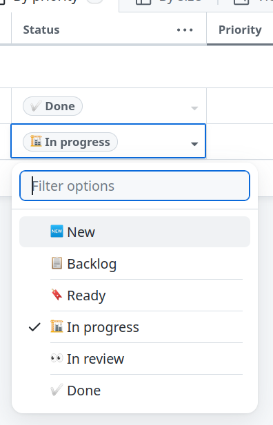
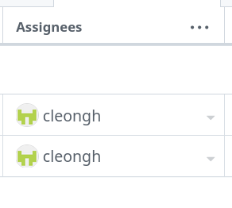
Figura 5: Sólo una persona, y siempre una asignada en PR2
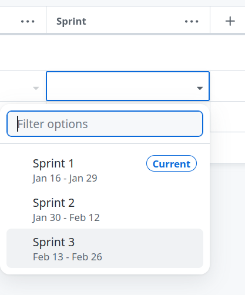
Figura 6: Hay que activar una nueva columna de tipo iteration
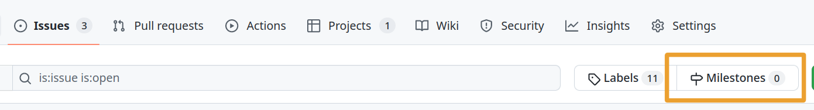
Figura 7: Creamos milestones para cada hito
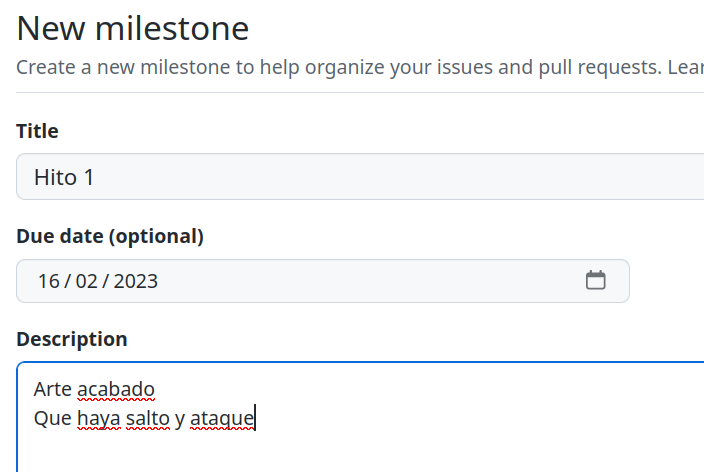
Figura 8: Es útil poner información del milestone
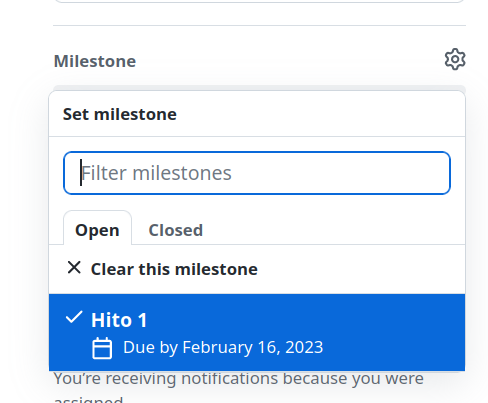
Figura 9: Para ello, asignaremos el milestone correspondiente a un issue
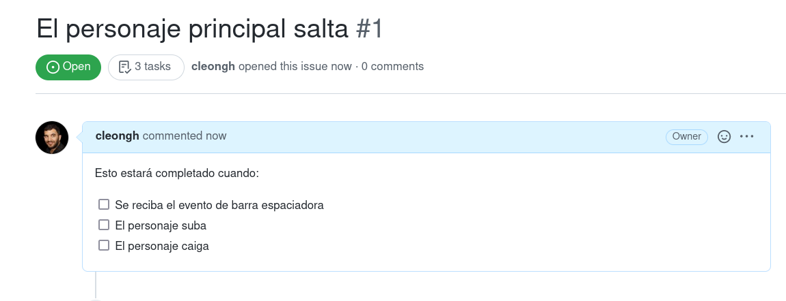
Figura 10: Podemos hacer listas de comprobación dentro de los comentarios de las issues
Esto estará completado cuando: - [ ] Se reciba el evento de barra espaciadora - [X] El personaje suba - [ ] El personaje caiga
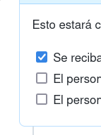
Figura 11: ¡Se pueden poner y quitar las marcas de las listas con cajas haciendo clic!
Las etiquetas son un sistema flexible y razonablemente potente para crear semánticas concretas en nuestro proyecto
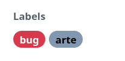
Figura 12: Cuando convertimos las historias en issues, podemos asignar etiquetas
No olvidéis poner una y sólo una etiqueta a cada issue:
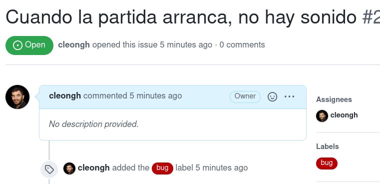
Figura 13: Por ejemplo, podemos crear etiquetas para marcar bugs
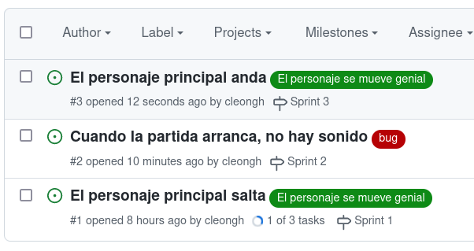
Figura 14: Con un código de colores, se ve muy bien
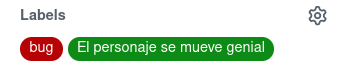
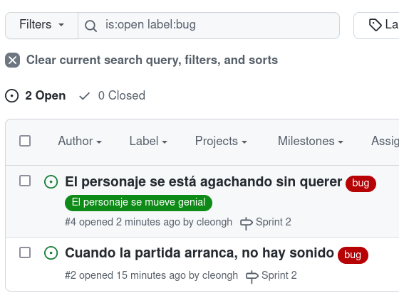
Figura 15: Y se puede hacer una búsqueda para ver sólo las historias con una etiqueta concreta